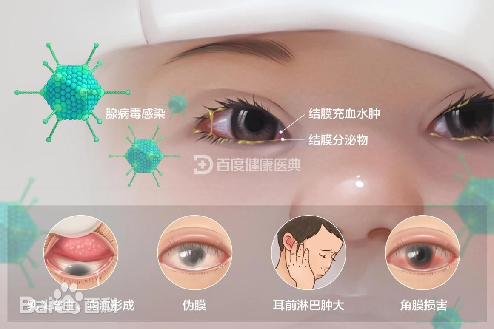
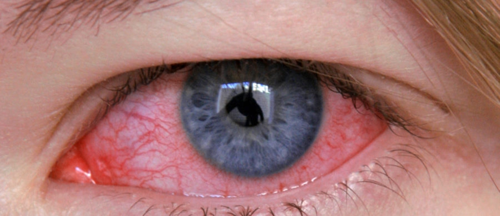

结膜炎
危险程度
中风险
就医建议
症状明显时及时就医
最佳就医时间
发病48小时内
什么是结膜炎？
结膜炎是眼睛结膜的炎症反应，可由病毒、细菌、过敏原等多种因素引起。它是最常见的眼部感染性疾病之一，具有较强的传染性，需要及时诊治和预防传播。
关键特征：
- 眼红、分泌物增多
- 眼痒、异物感
- 可能有传染性
- 多为自限性疾病
结膜炎分类
病毒性结膜炎
由病毒感染引起，传染性强
细菌性结膜炎
由细菌感染引起，分泌物较多
过敏性结膜炎
由过敏原引起，瘙痒明显
化学性结膜炎
由化学物质刺激引起
图示说明：
图1：结膜炎发病机制示意图

上图展示了结膜炎的发病机制
图2：正常眼睛与结膜炎对比图

上图展示了正常眼睛与结膜炎的对比
主要症状
常见症状
眼红
结膜充血、水肿
分泌物
可能为浆液性或脓性
瘙痒感
尤其在过敏性结膜炎中明显
畏光
对光线敏感
特异性表现
病毒性
水样分泌物，可能有淋巴结肿大
细菌性
黄绿色脓性分泌物
过敏性
剧烈瘙痒，可能伴有鼻炎
化学性
灼烧感，流泪增多
治疗方法
药物治疗
- 抗病毒眼药水
- 抗生素眼药水
- 抗过敏眼药水
- 人工泪液
局部护理
- 清洁分泌物
- 冷敷/热敷
- 避免揉眼
预防传播
- 勤洗手
- 避免共用毛巾
- 隔离感染源